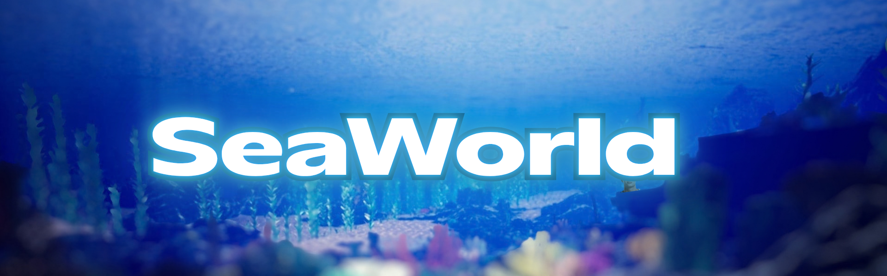

SeaWorld
Ínicio
Equipe
Participe
Contatos
Doe
Jogo da Memoria
Conteúdos

Veja também
A Encantadora das Profundezas
Lula-vampira-do-inferno encanta cientistas com estratégias surpreendentes de sobrevivência nas profundezas
Foca do Hawai sofre grande risco de extinção
Uma das espécies mais raras do planeta enfrenta ameaça de extinção devido à perda de habitat e poluição dos oceanos.
Vaquita Luta Contra a Extinção no Golfo da Califórnia
Considerada o mamífero marinho mais ameaçado do mundo, a vaquita enfrenta risco crítico de extinção devido à pesca ilegal em seu habitat natural.
Baiacu Criado em Cativeiro Pode Revolucionar o Tradicional Fugu Japonês
Sem Veneno, Baiacu Criado em Cativeiro Pode Revolucionar o Tradicional Fugu Japonês
Tartaruga-Gigante de Galápagos Luta para Sobreviver
A icônica tartaruga-gigante de Galápagos enfrenta ameaças ambientais, enquanto esforços de conservação tentam proteger a espécie.